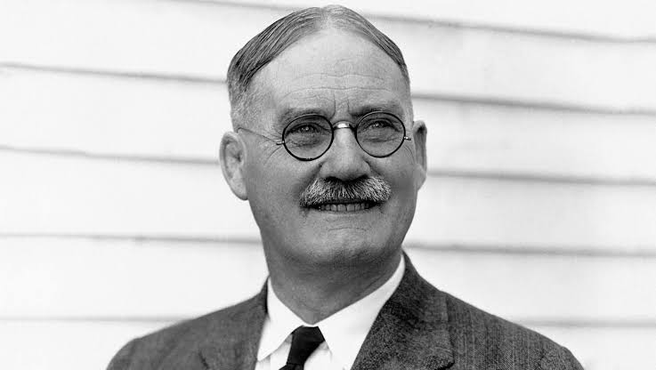
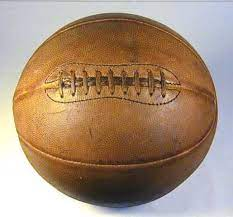
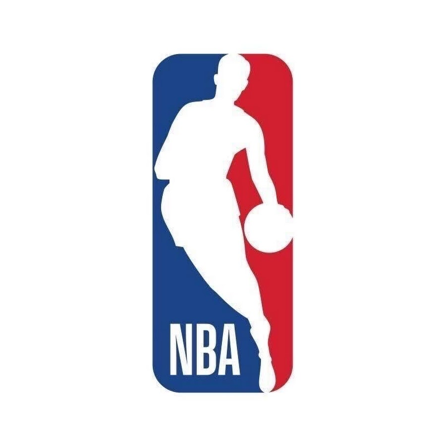

Košarka je nastala u Sjedinjenim Američkim Državama krajem 19. stoljeća.
Košarka je izumljena od strane dr. Jamesa Naismitha 1891. godine kao način da se zimska sezona održi aktivnom za studente. Prva igra igrana je sa fudbalskom loptom i korpama za breskve umesto obruča.
Do 20-ih godina prošlog stoljeća, košarka je postala popularna širom Sjedinjenih Američkih Država i šire. Profesionalne lige počinju se formirati, a košarka postaje popularan sport među mladima.
Košarka je 1936. godine postala olimpijski sport. NBA, osnovana 1946. godine, postaje najpoznatija liga na svijetu, privlačeći igrače iz cijelog svijeta. Danas je košarka jedan od najgledanijih i najigranijih sportova na globalnom nivou.
